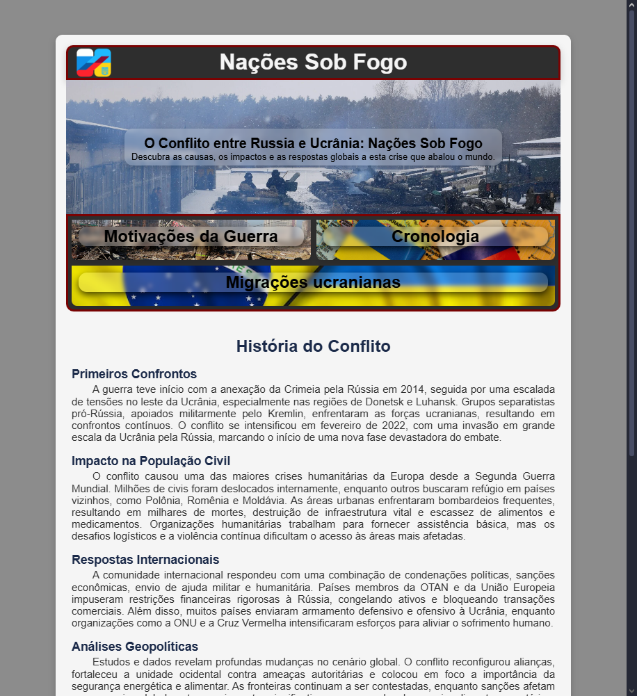
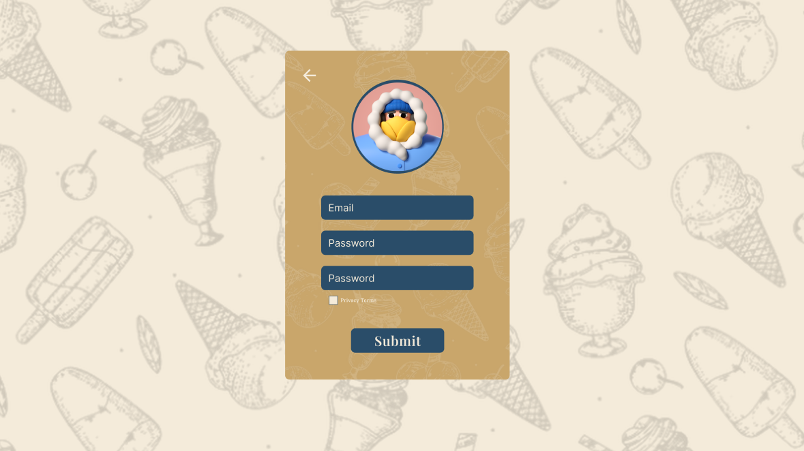
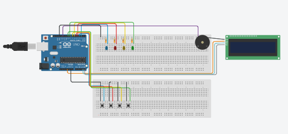

Meus Projetos
Todos os projetos estão disponíveis no meu GitHub.

Nações Sob Fogo
Um site criativo que explora HTML e CSS, desenvolvido para praticar e aprender de forma prática.
Ver Projeto

VanillaCore
Um projeto em equipe simulando desenvolvimento em uma empresa fictícia, ainda em andamento.
Ver Projeto

Jogo de Memória
Um jogo interativo desenvolvido com Arduino no Tinkercad, simulando desafios de memória.
Ver Projeto
Jogo da Velha
Site que simula um jogo da velja para uma diversão local, com design imersivo (primeira interação com JavaScript).
Ver Projeto